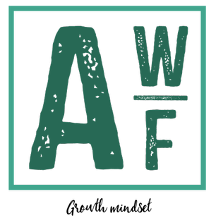

Hi, I'mAbdul-Karim W. Fuseini
I am
Dedicated Geoinformation Engineer with a strong commitment to driving the successful implementation of geospatial solutions. My self-driven approach and flexibility allow me to lead projects effectively, leveraging my passion for geospatial technology.
About
 I am a Master's student specializing in Photogrammetry and Geoinformatics at the Hochschule für Technik Stuttgart. Driven by a commitment to advancing location intelligence and spatial data interoperability, I focus on creating innovative solutions that bridge technology with sustainable development. With my experience in spatial data engineering, spatial data analysis, visualization, and project management, I take pleasure in performing thorough analyses and presenting results in an easily understandable way, catering to both technical experts and non-technical audiences.
- Software: ArcGIS Pro, QGIS, MATLAB, FME, ERDAS, ENVI, SNAP, Sparx's Enterprise Architect
- Solutions: ArcGIS Online, ArcGIS Enterprise, ArcPad
- Languages: Python, R, JavaScript, HTML & CSS
- Databases: PostgreSQL, SpatiaLite, MySQL
- Libraries: GDAL, rasterio, Folium, GeoPandas, Google Earth Engine, Plotly
- Frameworks: GeoDjango, Flask, Streamlit
- Tools: ODK, Kobo Collect, ESRI Field Apps, QField
- Other Technologies: Git & GitHub, Microsoft Office Software, Zoom
I am seeking an opportunity to utilize my abilities and skills to drive business success while gaining valuable professional development and enriching experiences.
Experience

- Surveyed and managed location data of over 2000 cocoa farmlands for the development of the Cocoa Management System (CMS).
- Checked & validated the accuracy & precision of surveyed data (on-site and in the office).
- Conducted community entry exercises to engage with farmers on the need to participate in the CMS project.
- Organized and compiled weekly data for district and regional level integration.
Tools: ArcMap, ArcPad, GPS
- Developed and conducted Statistical and QGIS data analysis tutorials for students.
- Conducted literature reviews detailing findings & summarizing studies.
- Conducted on-site interviews using structured & unstructured interview questions.
- Contributed in publishing a research study (proposing a new spatial database framework for pedestrian indoor navigation) in peer-reviewed journals.
- Coordinated data collection with other ad hoc research staff.
- Cleaned and organized spatial and non-spatial data for the development of the myTroski mobile app that facilitates navigation.
Tools: QGIS, SNAP, SPSS, Google Earth Pro
- Spearheaded data collection, monitoring & validation using geospatial data and ensured data quality and integrity standards.
- Supported staff through the Energy Research Group to create an effective organizational framework for collaborative interdisciplinary research & development.
- Supported the Energy Research Group through the measurement of building roofs for solar PV needs assessment using GIS and remote sensing data.
Tools: QGIS, Google Earth Pro, ArcMap
Projects
Exploring Open Data - Creating an Online Map for Analyzing Population Growth.
- Tools: Python, Streamlit, PostgreSQL/PostGIS, FME, QGIS Key Tasks:
- Identify and study literature related to the topic
- Utilizing web crawling techniques to automatically download or read HTML files from the Statistisches Landesamt Baden-Württemberg website.
- Integrate and store the collected data in the PostgreSQL database for further post-processing and analysis.
- Build a WebGIS Dashboard for the visualization of the collected data with appropriate charts/graphs
Solar-Photovoltaic Suitability Analysis in Jagstfeld, Bad Friedrichshall, Baden Württemberg, Germany
Implementing an assessment tool for Ecosystem Services in QGIS as an Open-source Software
- Tools:QGIS, QField, QGIS2Web Key Tasks:
- Configure a mobile data collection app on an Android smartphone using QField
- Testing the application in the field by collecting sampled data
- Configure a Web application for the visualization of the collected data, enriched by additional information, using QGIS2Web

Design of a ArcGIS Database for a Gas Utility
AHP-Geospatial Estimation of Groundwater Potential Zones for Sustainable Agriculture
- Tools:ArGIS Pro Key Tasks:
- Identify and study literature related to the topic
- Gather and prepare the key datasets for the analysis of the various contributing factors
- Use GIS-based Multi-Criteria Decision Making (MCDM) techniques to estimate groundwater potential zones for irrigation agriculture in the Savannah Region of Ghana.
- Perform weighted overlay analysis technique in ArcGIS to create the map of the groundwater potential zones.
- Develop a graphical abstract
- Make recommendations for stakeholders in groundwater development for irrigation agriculture, aiming to ensure sustainable crop cultivation in farming communities
Skills
GIS Software & Solutions
 R
R
Data Visualization
 Power BI
Power BI
 Tableau
Tableau
Languages and Databases
 HTML
HTML
Libraries
 GeoPandas
GeoPandas
Frameworks
Other
 Git
Git
 GitHub
GitHub
Education
Hochschule für Technik Stuttgart
Stuttgart, Germany
Degree: Master of Science in Photogrammetry and Geoinformatics
Ongoing
- GIS
- Database Systems and Design
- Geostatistics & Surface Modeling
- Project Planning & Management
- Remote Sensing
- Photogrammetry
- GIS Programming
- Customization, Internet GIS, & Visualisation
Relevant Courseworks:
Kwame Nkrumah University of Science and Technology
Kumasi, Ghana
Degree: Bachelor of Arts in Geography & Rural Development
Grade: First Class Honours
- GIS
- Remote Sensing
- Cartography & Map Design
- Introduction to Computers
- Research Methods in Geography
- Environmental Management
- Map Interpretation & Fundamentals of Surveying
Relevant Courseworks: